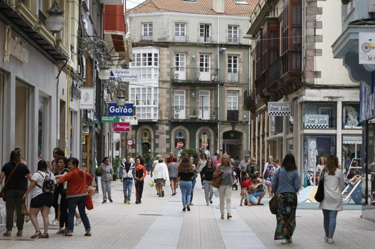
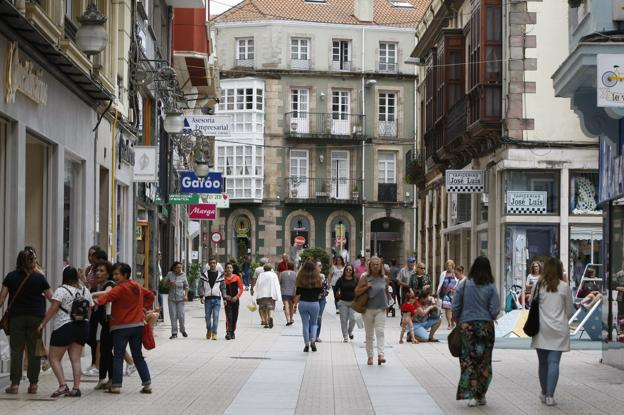

Torrelavega es un municipio y ciudad del norte de España. La ciudad es de carácter industrial y comercial, siendo el segundo núcleo urbano más relevante de la comunidad autónoma de Cantabria por detrás de la capital autonó mica Santander.
sniacela lecheraavenida españa
la lecheraavenida españa
avenida españa
 
